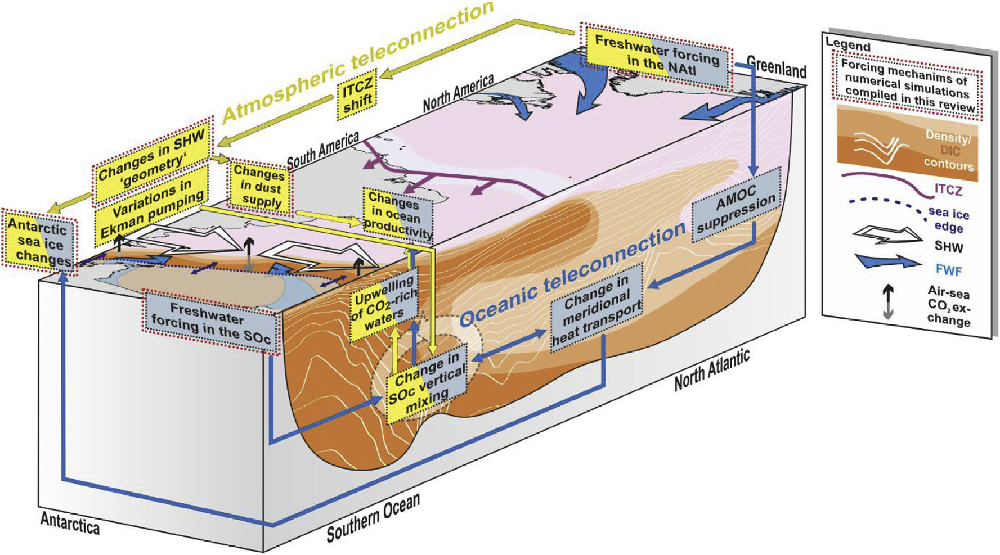
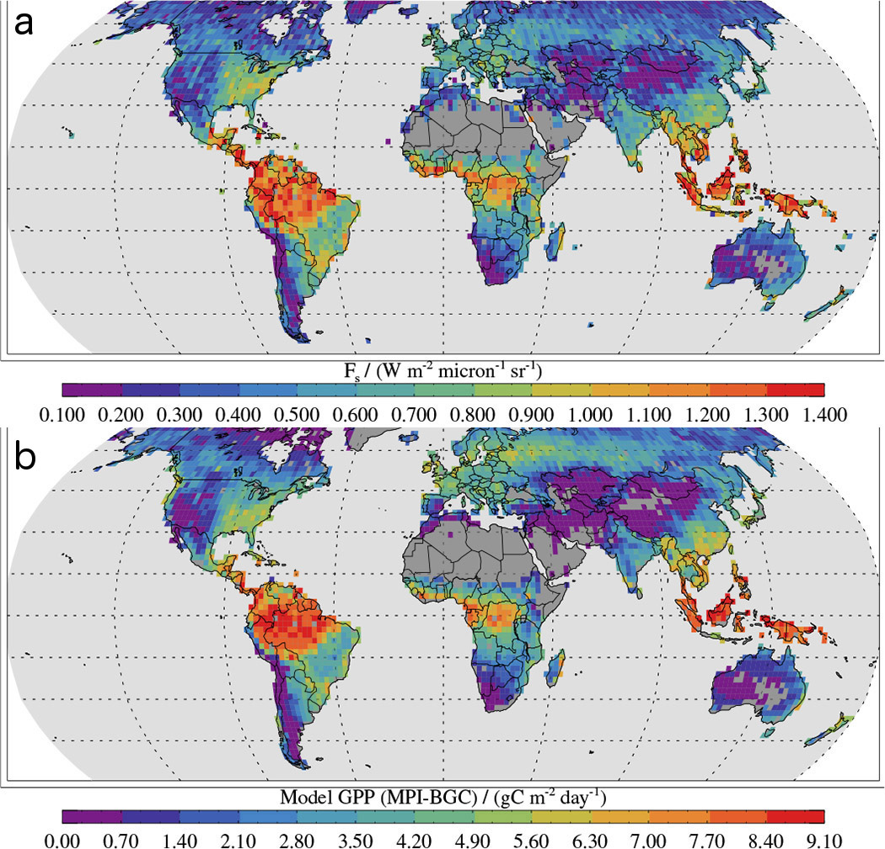
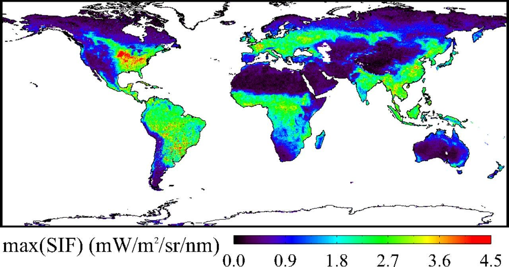
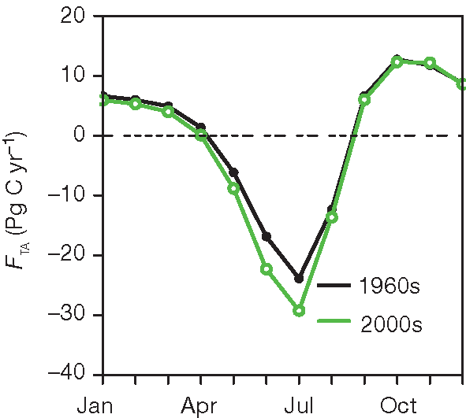

I’m Jonathan Burbaum, and this is Healing Earth with Technology: a weekly, Science-based, subscriber-supported serial. In this serial, I offer a peek behind the headlines of science, focusing (at least in the beginning) on climate change/global warming/decarbonization. I welcome comments, contributions, and discussions, particularly those that follow
Deming’s caveat
, “In God we trust. All others, bring data.” The subliminal objective is to open the scientific process to a broader audience so that readers can discover their own truth, not based on innuendo or
ad hominem
attributions but instead based on hard data and critical thought.
You can read Healing for free, and you can reach me directly by replying to this email.
If someone forwarded you this email, they’re asking you to sign up. You can do that by clicking
here
.
Today’s read: 8 minutes.
I seem to have established an opening quote as part of this adventure. So here’s this week’s quote:
“Sweet are the uses of adversity,
Which, like the toad, ugly and venomous,
Wears yet a precious jewel in his head;
And this our life exempt from public haunt
Finds tongues in trees, books in the running brooks,
Sermons in stones and good in every thing.
I would not change it.”
William Shakespeare, “As You Like It”, Act II, Scene I.
Lines of Duke Senior, an exiled ruler with a positive attitude.
Thus far, our journey has been a bit of a downer, and we’re definitely facing adversity. Can we turn the bitterness into sweetness like Duke Senior? Let’s look to what we know to see what might help.
The story continues…
Let’s reiterate what the problem is. Stated concisely:
The increase in carbon dioxide levels in the atmosphere, attributable to human extraction and combustion of geologic carbon over 350 years of industrialization, threatens to destabilize Earth’s climates.
To solve this problem, we must somehow control the Earth’s atmosphere. Specifically, we need to adjust the amount of carbon dioxide it contains if we expect to regulate the planet’s temperature. Regardless of how you slice it, adjusting Earth’s “thermostat” will require “
geoengineering
”, in other words, an intentional process of applying human ingenuity (backed by Science).
What we know so far is that the problem cannot be solved piecemeal and that decarbonization, at least as far as we’ve taken it, is as effective as a rain dance. And, now, despite technologies being our best hope for a solution, we cannot rely on a clever new solution to lead us out of this mess. We have to enter battle with the army we have, not the one we wish we had.
1
We know that carbon dioxide is at unprecedented levels in the atmosphere (at least over the past 4 million years or so, when Earth was a much less hospitable place for humans) but, from ice core data, we also know that it’s been as low as 180 ppm.
2
How did previous changes in the atmosphere happen? We already know that, despite our unrelenting combustion of geologic carbon, atmospheric carbon dioxide doesn’t increase steadily: It fluctuates daily or monthly timescale because of photosynthesis.
3
Of course, the models are dutifully complex:

Figure 2 from Gottschalk et al., Quaternary Science Reviews 220 (2019) 30-74 “Mechanisms of millennial-scale atmospheric CO2 change in numerical model simulations.” My attempt at removing jargon from the legend: Atmospheric (yellow) and oceanic link (blue) between North Atlantic (NAtl) climate anomalies and millennial-scale atmospheric CO2 changes illustrated for the Atlantic Ocean and the Atlantic sector of the Southern Ocean (SOc). An atmospheric teleconnection between freshwater-driven Gulf Stream (AMOC) perturbations and the release of CO2 from the SOc, and hence an increase in atmospheric CO2, was suggested to be driven by a southward shift of the Intertropical Convergence Zone (ITCZ; a windless region known to sailors as “the doldrums”) and a poleward strengthening of the westerly winds in the Southern Hemisphere (SHW). This might have led to an increase in SOc-to-atmosphere CO2 fluxes through enhanced
Ekman pumping
and adjustments in SOc surface ocean buoyancy forcing (changes in water density due to temperature and/or salinity), Antarctic sea ice extent (how much the polar ice cap extends into the ocean) and aeolian dust fluxes (windblown dust). An oceanic teleconnection between freshwater-driven perturbations of the AMOC and the release of CO2 in the SOc, leading to a rise in atmospheric CO2, was proposed to be driven by changes in meridional (north-to-south) heat transport in the ocean that resulted in enhanced vertical mixing in the SOc and the upwelling of CO2-rich water masses, reduced Antarctic sea ice cover and changes in surface ocean buoyancy forcing.
Phew!
Even in this lengthy academic review, there’s a lot of expressed uncertainty about exactly how carbon dioxide levels may have risen at the end of the last Ice Age. I hope this gives you a sense of the complexity of climate models and how much of a SWAG (scientific wild-assed guess) modelers’ explanations are. They’re doing their best to balance all the factors, but it’s not a trivial exercise, and it is fraught with chaos.
The one box
not
covered in the lengthy legend above is “Changes in Ocean Productivity”, which is, in fact, biology. “Ocean productivity” in these models changes when fertilizer is mixed into the surface of seawater, resulting in a hypothetical “algae bloom” of sorts, along with increased photosynthesis (carbon absorption) and sedimentation (carbon sequestration).
It’s clear that the biochemical process of photosynthesis plays a considerable role in regulating atmospheric carbon dioxide; Indeed, I assert that Biology is at the core of all changes, specifically the biochemistry of carbon dioxide absorption (fixation) by life forms. It is the single most significant factor in modifying Earth’s climates, both today and in the past. [Until photosynthesis evolved about midway in the 4.5 billion year lifetime of Earth, there was very little oxygen in our atmosphere!] Of course, that suggestion requires data, so here’s some satellite data to contemplate:

Figure 2 from
Frankenberg et al., 2013
.
(a) Solar-induced chlorophyll fluorescence (SIF) as retrieved from GOSAT from June 2009 to December 2011. (b) Modeled gross primary production (GPP) for the same time period and locations.

Figure 1 from
Guanter et al., 2014
Global map of maximum monthly sun-induced chlorophyll fluorescence (SIF) per 0.5° grid box for 2009.
The measurements behind these maps come from the same source, the GOSAT (Global Greenhouse Gas Observation by Satellite) satellite, which has the remarkable ability to measure chlorophyll from space. It turns out that chlorophyll is fluorescent, meaning that it absorbs light at one wavelength and then re-emits the light at another, characteristic wavelength. This satellite measures the re-emitted light from chlorophyll so we can see directly how much of the sun’s energy is being processed by plants!
So, the top pair of maps shows the sum total over 30 months of how much energy is absorbed [in panel (a)] and then how this translates to carbon dioxide absorption (based on models) [in panel (b)]. The Amazon and Indonesian rain forests have a clearly outsized contribution, absorbing about twice as much as the midwestern corn belt.
The second map is derived from the same source, but instead of mapping total absorption,
peak
absorption is plotted, in other words, how much energy is absorbed in the highest absorbing month. Now, we see that the corn belt outperforms the Amazon by about a factor of two. Why?
Here’s my explanation: Near the Equator, there are no seasons. With more than enough rainfall, the Amazon can absorb carbon dioxide year round, so it’s a hugely important carbon sink. In the midwest, however, where humans have been able to optimize productivity through agricultural practices, the peak is much higher, but only during the growing season, which (for corn) is only 4 months. Importantly, natural ecosystems (where few humans live) level off at about the same peak productivity, provided there is enough water.
Bottom line: Human intervention into natural ecosystems is
not
universally detrimental. We’re already controlling a lot of nature as it is. So, human intervention into the environment can be a force for good. Score a point for technology, at least the potential of it. To my eye, anyway, this suggests the audacious and counter-environmentalist step of clearing the Amazon for agriculture and recruiting breeders and Iowa corn growers to work their magic year round! This could potentially increase Earth’s food supply while capturing more carbon. I don’t know if that’d pencil out in the long run, but I also wouldn’t join a protest march against it.
This
is why data and objective non-political analysis is so important!
So if some human actions are actually
good
for the environment, how come we don’t see it in the data?
Well, it turns out, we do. Returning to Keeling’s data set, a research group examined the amplitude (wave height) of the seasonal variation that is present. Here’s what they observed:

From
Zeng et al.,
Figure 2 inset. The average seasonal cycle of carbon exchange between the biosphere and atmosphere for the two periods 1961–70 and 2001–2010, showing enhanced CO2 uptake during the spring/summer growing season
What is observed is that
absorption
of carbon from the atmosphere during the peak growing season in the midwest has actually increased coincident with the “Green Revolution”. Let me repeat my caveat, “Scientists can’t prove cause and effect conclusively without an experiment.” But the increase in absorption is consistent with increased agricultural yields over the same time period.
So, in addition to the detrimental effect of human extraction and combustion of geologic carbon, there is a beneficial effect of human optimization of agriculture to capture atmospheric carbon. A ray of hope!